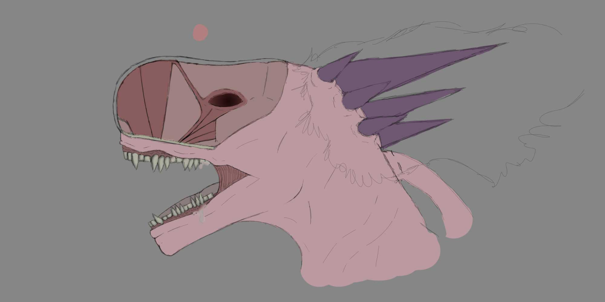

PINK ALIEN
Description
Light mauve Polybrachial Dinosauria (Light pink dinosaur with more than one pair of arms) Also refered to as a pink xenomorph by locals and social media.
Why it is considered a threat?
This Polybrachial dinosauria is considered a threat due to it's unpredictable apperances and clumsy movement around Chicago streets, destroying buildings and vehicles, even crushing pedestrians. It is also believed that the alien might be blind due to the fact the eyeholes are possibly nostrils and not in fact eyeholes.
What do's and what don'ts
What to do:
What not to do:
Diet
Seahorses eat small crustacea such as Mysis Shrimp. An adult eats 30-50 times a day. Seahorse fry (baby seahorses) eat a staggering 3000 pieces of food per day.
Tail
Seahorses have a prehensile tail. This allows them to grip onto eelgrass and other weeds and prevents them from being washed away by strong currents and waves.
Colour
Seahorses can change colour very quickly and match any surroundings in which it finds itself. They have even been known to turn bright red to match floating debris.
Both males and females also change colour during their courtship display.
Threat level
Though showing no agression, the Polybrachial Dinosauria like mentioned, cannot see you. Do not by any means get in front of it as you are in a high risk area for being crushed. Threat level: Extreme